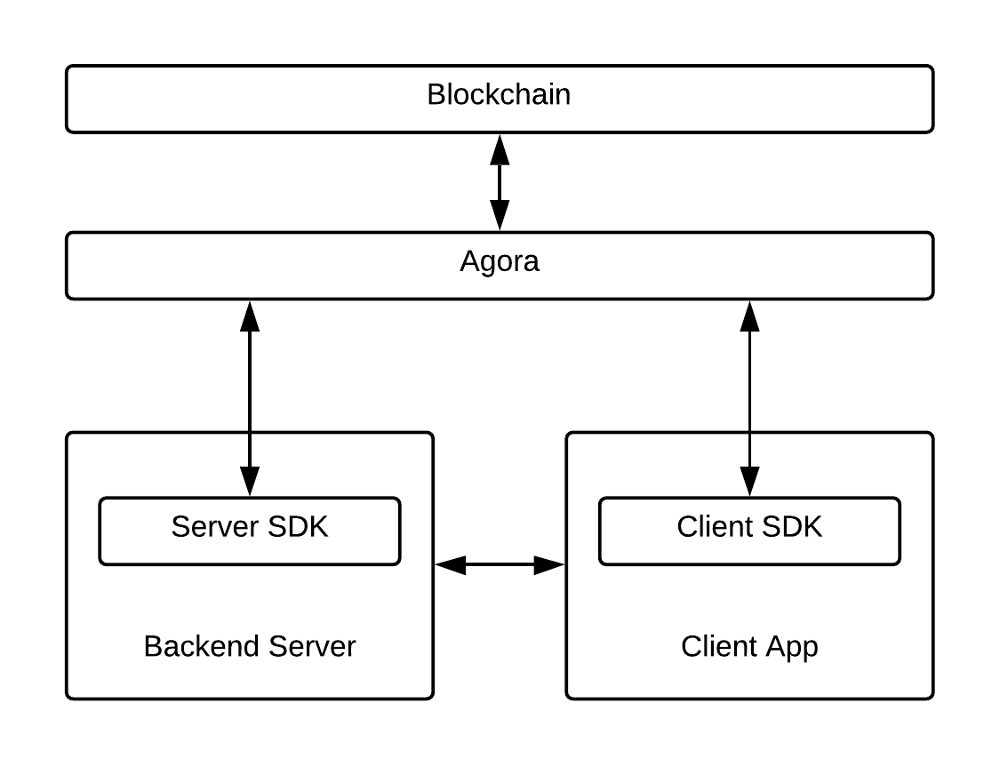

Kin Architecture Overview
Welcome to the Kin Developer documentation. Here you'll find everything you need to allow your users to earn, spend, and manage Kin. If you are looking to launch an app with Kin, also read about the latest Kin Developer Program which offers incentives to integrate Kin. If you are already familiar with the program you can sign up now.
Making Kin work for your users is a cooperative effort. In this diagram you'll see the Kin Blockchain Service team is responsible for managing the Kin Blockchain and Horizon servers, while you will add features to your Back-end Server and Client App(s). For clarity and simplicity this is not a complete architecture, but only the parts meaningful to developing an app that uses Kin.

Let's discuss the elements of Kin architecture from the bottom up, beginning with the two Developer Service elements you're directly responsible for creating.
Developer Service
You have direct control over developing one or more client apps and for maintaining a back-end server.
Client app
Your client app provides an interface for your users, allowing them to create and manage Kin accounts. Kin provides client SDKs including the Kin SDK for Android, Kin SDK for iOS and Kin SDK for Unity.
Opening a user account on the Kin Blockchain begins with the client app. The SDK provides classes and methods to create and securely store a keypair required for accessing the account. The keypair consists of a public address (sometimes called public key) and a private key.
The client SDK also provides classes and methods for managing the account, including such key actions as:
- Obtaining account balance
- Sending Kin from the user's account to another account on the Kin Blockchain.
- Listening for events on the user's account.
For a quick code introduction to client apps, see the Hello World Client for Android or the Hello World Client for Unity.
Back-end server
When you're in production, your back-end server will provide crucial Kin services to your users. Kin provides the Kin SDK for Python for your use.
After a client app begins the process of account creation, they'll send a request to your server to add the account to the Kin Blockchain. The Kin SDK for Python includes scripts that allow you to process those requests with high throughput. You will in turn send a request to a Horizon server managed by the Kin Blockchain service. The Kin Blockchain service will process the request and return a result including error codes.
The Kin SDK for Python provides such key actions as:
- Functions to create accounts, send transactions and read account balances
- Authorizing your users to execute transactions on the blockchain without being charged Fee. (This requires prior approval from Kin.)
- Monitoring multiple accounts
- Creating your own server account on the Kin Blockchain. This account will be used to receive your rewards once the Kin Rewards Engine is live.
For a quick introduction to back-end server coding, apps, see the Hello Server World for Python.
Kin Blockchain Service
The Kin Foundation (and its partners) are responsible for managing two key components in the Kin architecture.
Horizon servers
Horizon servers provide REST API access to the Kin Blockchain. There are two Horizon server endpoints: one for the production environment and one for testing. Kin SDKs come preconfigured with variables to pick which blockchain environment to use.
Kin Blockchain
The Kin Blockchain is a decentralized service optimized for the Kin Ecosystem. Key attributes include:
- High throughput. It's our goal to build with you the most used blockchain in the world, and we made sure our blockchain has the capacity to grow.
- Kin Rewards Engine (KRE). Each participating developer is compensated by the Kin Foundation for their contribution to the growth of the Kin ecosystem. When the rewards engine goes live it will transfer Kin directly from the foundation to your account on the Kin Blockchain.
- Low transaction cost. Like most blockchains, Kin Blockchain by default charges a very small fee to execute a transaction. This helps prevent spam and denial of service attacks on the blockchain by unknown and untrusted participants. Kin Blockchain technology allows your users to avoid blockchain fees if you label all of their transactions with an
appIDand get your app approved by Kin to participate in the Whitelist service.
Environments
Kin has two environments available to developers.
The Test environment, often referred as the Playground, is where developers can test their integration of Kin, create accounts freely and execute transactions. This environment might be reset at times.
The Production environment is the public blockchain where all public transactions happen. The environment is never reset.
The two environments should be as similar as possible although we normally push updates to the Test environment first. In the Test environment we also have the friendbot available to developers.
Next steps
That covers the big picture of the Kin Blockchain architecture. From here we suggest you go to: